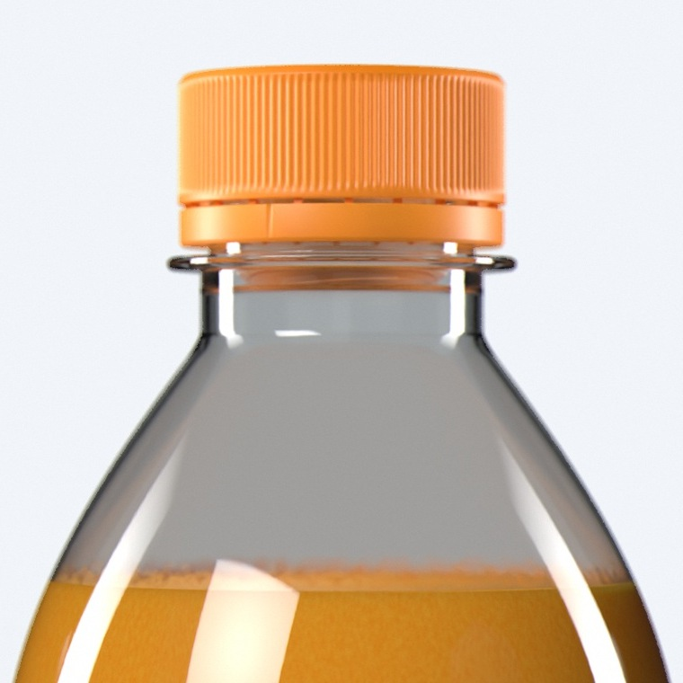
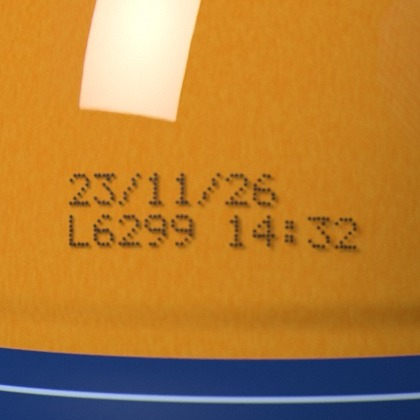

From closure to fill level
Checks that the cap is present, intact and correctly positioned, inspects the tamper band and level, and reads container markings. For glass and PET, from 0.33 L to large containers holding several litres.

Cap defects

Tilted cap
Tamper-band integrity

Tethered cap

Fill level

Batch presence and reading

Handle presence and orientation